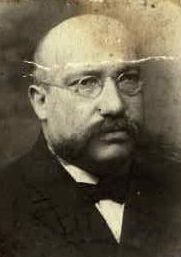
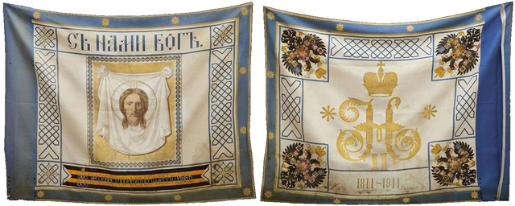
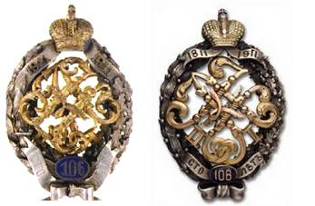
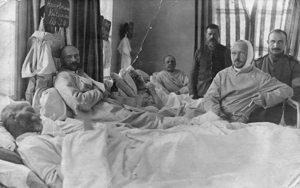
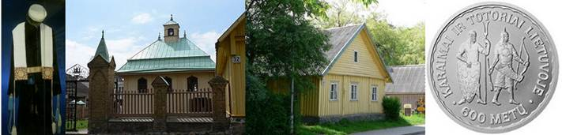
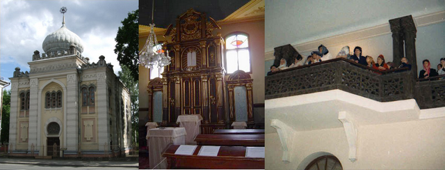

Письмо автору
Письмо автору
|
Домой greg20111 abv boris Форум Архив форума Блог SQL-Базы DSO-базы Гено-базы Проекты Статьи Документы Книги Чат Письмо автору
|
|
.В 2014 году исполняется 100-лет со дня начала
первой мировой войны, приведшей к глобальным потрясениям. Вильнюс (в 1914 году
– Вильна, центр Виленской губернии Российской империи, столица
генерал-губернаторства и всего одноименного или - Северо-западного края
империи, а также – центр Виленского военного округа) также пережил ряд
катаклизмов, неизбежно отразившихся на судьбах всех его жителей. Одним из них
был бывший офицер российской армии Исаак Гаврилович Абкович, с воинской судьбой
которого сегодня можно познакомиться благодаря его потомкам и ныне проживающим
в Вильнюсе, в частности, внуку - Ромуальду Шпаковски, любезно предоставшего в
наше распоряжение ряд материалов из личного архива.

Фото 1930-х годов. (дата указано приблизительно, если можете, поправьте, пожалуйста)
Краткая
биографическая справка:
АБКОВИЧ Исаак Гаврилович [30.01.1874-1944],
07.08.1899 года выпуска из
Виленского ПЮУ по 2-му разряду подпрапорщиком в 106-й пехотный Уфимский полк в
Вильне. Караимского исповедования.
Из мещан Виленской губернии. Образование: Петроградская 1-я гимназия (окончил 4
класса), Виленское пехотное юнкерское училище по 2-му разряду (1899, 2-й
разряд).
Чины: В службу вступил рядовым на правах вольноопределяющегося 2 разряда в 110-й
пехотный Камский полк 08.02.1895. Подпоручик (ВП от 31.03.1900, ст.
31.03.1900). Поручик (ВП от 20.09.1904, ст. 31.03.1904). Штабс-Капитан (ВП от
20.09.1908, ст. 31.03.1908). Капитан (ВП от 21.08.1914, ст. 31.03.1912).
Подполковник (ВП от 20.11.1916, ст. 08.08.1916). Полковник (ПАФ от 05.09.1917,
ст. 01.09.1916).
Занимал должности: в офицеры произведен в том же 106-м пехотном
Уфимском полку в Вильне. Командующий 4-й роты 106-го пехотного Уфимского полка
(с 10.10.1913). Участник первой мировой войны. Командующий 3-м батальоном того
же полка (с 03.06.1915). Помощник командира 106-го пехотного Уфимского полка (с
25.06.1917), утвержден в
должности пр. по Х армии №1334 от 11.11.1917. Вр. командующий 106-м пехотным
Уфимским полком (с 17.09.1917), утв. в должности 04.12.1917 пр. №358. В межвоенный
период проживал в Вильнюсе, умер в 1944 году.
Участие в наступательных боях:
у м.Иглевки – 29-30.05.1915, у д.Подавине – 02-04.06.1915, у д.Тихобуж –
02.07.1915 (где был ранен и контужен), у д.Вулька на Огинском канале –
08-12.10.1915, на Огинском канале у шлюзов №2 и №3 – 06-09.1916, у д.Вольки
Галузийской – 21-23.06.1916, за переправу через р.Стоход у д.Малый Обзир и
высоты 72,2 – 26-29.06.1916 и 15-17.07.1916, на р.Стоход у д.Ново-Деревище и
Тоболы – 05-08.08.1916; у д.Тоболы 10.08.1916 на протяжении 8 часов находился в
отражениях атак и контратак, где был контужен в голову и спину.
Награды: Св. Станислава 3-й ст. с м. и б. (пр. по 12-й армии №76 от 13.10.1915, утв. ВП от 07.05.1916), Св. Анны 4-й ст. с надписью «За храбрость» (пр. по 2-й армии №677 от 19.10.1915, утв. ВП от 22.06.1916), Св. Анны 3-й ст. с м. и б. (пр. по 3-й армии №1350 от 19.08.1916), Св. Станислава 2-й ст. с м. (пр. по 3-й армии №1868 от 18.12.1916), Св. Анны 2-й ст. с м. (пр. по Х-й армии №880 от 17.07.1917).
Источники:
Антонов А.Н. ХXХV. Виленское пехотное юнкерское училище. Краткий исторический очерк. Вильна. 1900. стр. сп. 112.
Журнал «Разведчик». №494. 04.04.1900. стр. 336. (ВП от 31.03.1900).
Памятная книжка Виленской губернии на 1901 год. Вильна. 1900. стр. 172.
Журнал «Разведчик». №731. 26.10.1904. стр. 1097. (ВП от 20.09.1904).
Журнал «Разведчик». №937. 07.10.1908. Прил. стр. 373. (ВП от 20.09.1908).
Общий список офицерским чинам
русской императорской армии. Составлен по 1-е января 1909г. СПб. 1909. стб.
292.
Календарь «Вся Вильна». Вильна. 1912. стб. 90.
Памятная книжка Виленской
губернии на 1913 год. Вильна. 1913. стр. 103.
Календарь «Вся Вильна». Вильна. 1914. стб. 96.
Послужной список командира 106-го пехотного Уфимского полка Абковича. Сост. на 11.12.1917г.
Успенский А.А. В плену. ч. 2 1917-1918 гг. Каунас. 1933.
Zajončkovskis M. Karaimai kariuomenėje. Vilnius, LNM. 2000. 88 p., lietuvių, anglų, lenkų ir rusų k., ISBN 9955-415-08-8.8
http://www.grwar.ru/persons/persons.html?id=7688
http://books.google.ru/books/about/Karaimai_kariuomen%C4%97je.html?id=-MkiAQAAIAAJ
http://www.lnm.lt/leidiniai/serijos/kiti-leidiniai.html
http://www.lnm.lt/fotos/leidiniai/s09018.jpg Заиончковский М. Караимы в армии.
http://www.grwar.ru/library/Uspensky-capt-2/UC_01.html?PHPSESSID=95a3dbaaa1170473513bdc83bce913ef
http://pilt.delfi.ee/album/48201/?page=17 фото из книги «Караимы в армии»
http://pilt.delfi.ee/album/48201/?page=18
Как следует из справки
вся служба И.Г.Абковича
прошла в 106-м пехотном Уфимском полку. В мирное время этот полк квартировал в
Вильне.
Вообще в Вильне на 1914
год располагался самый крупный за всю историю города постоянный военный
гарнизон:
-
все полки
27-й пехотной дивизии 3-го армейского корпуса (105-й, 106-й, 107-й и 108-й),
-
два полка
43-й пехотной дивизии 2-го армейского корпуса (169-й и 170-й),
-
112-й
пехотный Уральский полк 28-й пехотной дивизии 20-го армейского корпуса,
-
27-я
артиллерийская бригада,
-
3-й Донской
казачий Ермака Тимофеевича полк,
-
2-й мортирный
артиллерийский дивизион,
-
3-й саперный
батальон,
-
2-я искровая
рота,
-
Виленское
военное училище.
Полная штатная
численность одного пехотного полка в соответствии со штатами 06.05.1910г.
достигала 4333 человек (в мирное время для приграничного округа она составляла
около 71% от этой цифры или ~3040), так что можете представить, как много
«служивых» было в те годы в Вильне (ни до 1914, ни после - подобного не было).
106-й пехотный Уфимский полк
Старшинство - 17.01.1811 г. Полковой праздник - 26 октября. Дислокация - Вильна (до 30.07.1914)
Формирование полка:
Полк сформирован 13 августа 1863 г. из Вологодского резервного полка, который, в свою очередь, был сформирован 6 апреля 1863 г. из 4-го резервного и бессрочно-отпускных нижних чинов 5-го и 6-го батальонов Вологодского пехотного полка. С 25 марта 1864 года получил наименование 106-й пехотный Уфимский полк.
В 1884 году Уфимскому полку было отдано старшинство старого Саратовского пехотного полка, сформированного 17 января 1811 г. и в 1833 г. в полном составе присоединённого к Вологодскому полку.
Командиры полка:
ранее 03.06.1864 – не ранее 1872 – полковник Белиза Дмитрий Николаевич
ранее 01.02.1873 – не ранее 1878 – полковник Коммисаров Степан Елизарович
05.01.1880 – 13.05.1886 – полковник Шелковников Владимир Яковлевич
21.05.1886 – 04.04.1894 – полковник Базилевский Владимир Николаевич
11.04.1894 – хх.хх.1899 – полковник Левшановский Лев Фомич
31.10.1899 – хх.хх.1900 – полковник Федоров Михаил Федорович
16.01.1901 – 11.09.1906 – полковник Митрофанов Александр Васильевич
11.09.1906 – 08.02.1914 – полковник Беймельбург Артур-Севостьян Емильевич
08.02.1914 – 03.02.1915 – полковник Отрыганьев Константин Прокофьевич
03.02.1915 – 03.02.1915
– полковник Крикмейер Константин-Вольдемар Владимирович (вр.и.д.)
03.02.1915 – 08.02.1915 – полковник Соловьев Александр Николаевич (вр.и.д.)
19.03.1915 – 10.08.1916 – полковник Зыков Александр Сергеевич
30.08.1916 – 17.09.1917 – полковник Косаговский Александр Павлович
17.09.1917 – 1918(?) – полковник Абкович Исаак Гаврилович (вр.и.д., утв. в должности 04.12.1917)
Знаки отличия:
Полковое Георгиевское Знамя с надписью: «За Севастополь в 1854 и 1855 годах». Пожаловано было батальонам в бытность их в составе Вологодского полка.
Георгиевское юбилейное знамя
образца 1900 года пожаловано полку 17 января 1911 года. На лицевой стороне Спас Нерукотворный. Кайма светло-синяя.
Знамя имело Георгиевское навершие образца 1867 года и чёрное древко.
Надписи: «За Севастополь въ 1854 и 1855 годахъ» (на отрезке Георгиевской ленты)
и «1811-1911». На Александровской юбилейной ленте надписи: «1911 года» и
«1811г. Саратовскiй пъхотный
полкъ».

Примерно так могло бы выглядеть сегодня это Знамя 106-го полка (реконструкция
методом подобия Знамени др. полка).
В настоящее время судьба ни одного из Знамен полка неизвестна (в царской армии кроме основного Знамени полк мог иметь ещё несколько; обычно каждый батальон имел свое Знамя, а полковым считалось Знамя 1-го батальона полка).
Реконструкция Знамени 106-го полка осушествлена на основе данных книги Шевякова Т.Н. и Пархаева О.К. «Знамена и штандарты Российской императорской армии конца XIX - начала XX вв. АСТ, Астрель. 2002., а также:
http://www.znak-auction.ru/limg2.htm?c=1473c6&n=1 Георгиевское юбилейное знамя 126-го Рыльского пехотного полка
http://www.znak-auction.ru/limg2.htm?c=1473c6&n=2
1907 г. Знамя образца 1900 г. Неизвестная мастерская. На лицевой стороне – Спас Нерукотворный, кайма светло-синяя. Надписи: на георгиевской ленте: «За Севастополь въ 1854 и 1855 годахъ» и андреевской ленте: «1807-1907». Шелк, золотая нить, муар. Размер 107×137 см.

Юбилейные знаки 106-го
пехотного Уфимского полка (слева – офицерский, справа - для нижних чинов).
Утвержден 22 августа 1910 г.
Знак имеет форму венка из лавровых и дубовых листьев. Венок увенчан золотой Императорской короной с ниспадающими серебряными лентами с датами «1811» и «1911». Внутри венка расположены золотые скрещенные вензеля Императоров Александра I и Николая II. Внизу венка синий эмалевый щит с цифрой «106» и серебряный бант с надписью «100 лет».
[Патрикеев С.Б., Бойнович А.Д. Нагрудные знаки России. т. 2.
Издательство: Селеста. 1998. стр. 187.]
Церковь полка в честь Св.
Великомученика Димитрия Солунского.
Походная при полку
церковь была учреждена в 1864 г. Церковь с 1897 г. помещалась в здании казарм,
арендуемых городом для полка и расположенных на предместье г. Вильны
«Снипишки». Казарменное здание церкви (вместимостью на 600 человек) было
построено в 1894 г. для стоявшего здесь в то время 182-го пехотного резервного
Новотрокского полка, бывшим полковником П.П.Ласточкиным. В 1897 г. на место
Новотрокского полка стал 106 пехотный Уфимский полк, и церковное здание было
занято для той же цели. Колокольня была устроена над западной частью храма и увенчана
большою главою. Вход в церковь - с улицы и с полкового двора. В храме было
много икон художественного письма (Полковой образ-складень был устроен на
средства чинов полка. Есть историческая заметка, что 1-й батальонный праздник -
был празднован 26.10.1862 г. Командиром батальона был в то время полковник
Димитрий Николаевич Белизо - и очень возможно, что установление празднования
Св. Великомученика Димитрия (полковой праздник) имеет связь с именем полковника
Белизо, каковой был затем и командиром Уфимского полка, при его сформировании в
1863 г.).
Внутренний вид церкви производил приятное впечатление; обилие света.
По штату при церкви был положен один священник. В 1914 году им был протоиерей о. В.В.Нименский (с августа 1914 года – в германском плену).
[Цитович Г.А. Храмы армии и флота. Пятигорск. 1913]
Военный марш: в качестве полкового использовался заимствованный
марш 8-го драгунского (3-го уланского) Смоленского полка. Кроме указанного
кавалерийского Смоленского полка и 106-го Уфимского полка этот же марш
использовали ещё 4 полка: 16-й Ладожский, 34-й Севский, 62-й Суздальский и
143-й Дорогобужский полки.
http://muzoblok.com/tracks/%D0%9C%D0%B0%D1%80%D1%88%20%D0%BF%D0%BE%D0%BB%D0%BA%D0%B0
http://marsches.zbord.ru/viewtopic.php?p=4565
Марш Ладожского пехотного полка (запись 1974 г.)
Весьма любопытная композиция:
http://www.russian-records.com/details.php?image_id=7295&l=russian
Оркестр 106-го Уфимского пехотного полка, дир. Бороздюк - Атака русской пехоты
(с командой, сигналами и стрельбой)
Исполнитель: Оркестр 106-го
Уфимского пехотного полка
Композитор: Иоганн Баптист
Виддер
Руководитель (дирижёр): Феликс
Андреевич Бородзюк (штатный капельмейстер 106-го полка)
Место записи: Вильно | Дата записи:
03-1910
Как ранее было указано, вся офицерская служба И.Г.Абковича прошла в одном и том же 106-м пехотном Уфимском полку. Но он неоднократно из него откомандировывался для выполнения других служебных задач.
Так, он выполнял обязанности заведывающего лагерем полка и имуществом
106-го запасного батальона (05.02.1902-15.10.1904).
В период
Русско-японской войны 1904-1905гг. был командирован в резерв офицеров
действующей армии с 22-м маршевым батальоном (20.08.1905-03.11.1905).
Командующий ротой 22-го маршевого батальона (22.08.1905-03.11.1905).
Неоднократно
командировался для обучения ратников ополчения.
С началом первой мировой войны, вероятно как уже имеющий подобный опыт, он вновь был назначен командиром этапной роты,
сформированной при полку (18.07.1914). Прибыл в восстановленный полк из
командировки – 1 мая 1915 года.
А тем временем полк пережил ряд героических и весьма трагических событий. В августе 1914 года вместе с другими частями 1-й русской армии, ещё не до конца отмобилизованный, он участвовал для спасения французской армии в походе в Восточную Пруссию, сражениях при Сталлупенене 04.08.1914, Гумбиннене 07.08.1914 и их взятии. В сентябре-октябре полк был выдавлен из Восточной Пруссии превосходящими силами противника. 24.10.1914 – вновь вторгся в Восточную Пруссию, снова отличившись в бою под Сталупененом 25.10.1914г., когда отбил настойчивые атаки германцев, чем обеспечил фланг и тыл соседнего полка и предотвратил возможность отхода всей дивизии. За эти действия полка его командир впоследствии был удостоен Георгиевского оружия.
С ноября 1914 года полк – в составе 20-го армейского корпуса вновь созданной 10-й армии. Зимой 1915 года в ходе германского наступления с попыткой окружения всей 10-й армии полк, героически защищаясь (в ходе боя, например, у д. Махарце 3 февраля, окруженная русская группировка разбила свежую немецкую дивизию, а сам 106-й пехотный Уфимский полк взял, например, командира и знамя 173-го германского пехотного полка, 16 офицеров и 1000 нижних чинов пленными, 12 орудий и 4 пулемета в делах у Срезского Ляса 3 и 4 февраля), был практически разгромлен, а последние остававшиеся в строю – 11 офицеров и 170 нижних чинов, большею частью раненых, – попали в плен.
Перед последним боем в ночь на 08.02.1915г. Знамя полка по приказу вр.и.д. командира полка полковника А.Н.Соловьева было зарыто в Августовском лесу (древко с Георгиевскими лентами и серебряная скоба были зарыты ещё 03.02.1915г. у д. Махарце).
19.03.1915г. полк был возрожден в новом составе (судя по высочайшему приказу о назначении нового командира полка).
Уже весной 1915 года немцы нашли древко и серебряную скобу. В августе 1916 года немцами было найдено и само Знамя.
Среди офицеров полка, попавших в плен, были тяжелораненый командир полка полковник Отрыганьев К.П. (с ним полк вступил в первую мировую войну), временно его заменившие полковник Крикмейер К.-В.В. (также будучи раненым) и полковник Соловьев А.Н. (прослуживший в самом полку более 36 лет, незадолго до войны уволенный в отставку, но по собственному почину вернувшийся на службу и в родной полк), командир роты капитан Баллод Я.П. (будущий верховный главнокомандующий армии Латвии), командир роты капитан Успенский А.А. (был ранен и контужен) и др. Благодаря последнему из перечисленных сегодня мы можем более определенно знать, что произошло с полком в первый период войны, т.к. позднее он издал свои воспоминания:
Успенский А.А. На войне. Вост. Пруссия - Литва. Каунас. 1932.
Успенский А.А. В плену. ч. 1 1915-1916 гг. Каунас, 1933.
Успенский А.А. В плену. ч. 2 1917-1918 гг. Каунас, 1933.

Фото из германского плена.
Это фото было
приложено к письму (точнее почтовой открытке) поручика А.А.Кульдвера (на снимке
предположительно второй справа) супруге полковника К.П.Отрыганьева (на снимке
третий слева). Текст на открытке следующий: «15 марта 1915 г. Уважаемая Нина
Васильевна! Супругу Вашему сделали операцию, после которой он очень слаб и
просит написать Вам. Поддерживают его п(т)ока вином. Рана очень осложнилась. О
последующем течении болезни буду сообщать. Недавно мы снимались и высылаем
карточки. Уважающий Вас А.Кульдвер поручик 106 п[ех.] У[фимского]. полка».
http://www.grwar.ru/pictures/pictures.html?id=368 фото из личного архива А.В.Теплова.
Заслуженный и всеми любимый командир 106-го полка полковник Отрыганьев Константин Прокофьевич скончался 29 марта (по другим данным - в середине апреля) 1915 года в госпитале от полученных ран и гангрены. Похоронен на Первом гарнизонном кладбище Кёнигсберга. Посмертно был награжден Георгиевским оружием (ВП от 10.06.1915) и произведен в генерал-майоры (ВП от 05.08.1917, ст. 03.02.1915).
Тем временем возрожденный полк продолжал свою историю и боевой путь, а с 01.05.1915г. в его ратном пути принял участие и вернувшийся в полк из командировки И.Г.Абкович (см. пункт Участие в наступательных боях из его Краткой биографической справки). Нет сомнения, что он достойно продолжил ратные подвиги офицеров полка, став, в конце концов, его последним в истории командиром. За 2,5 года фронтовой жизни он прошел путь от капитана до полковника, был дважды ранен и контужен, награжден 5-ю боевыми орденами (все с мечами и бантами). Пользовался большим уважением у своих боевых сослуживцев и подчиненных, подтверждением чего может служить следующий факт: в пору «разгула разнузданной демократии» в армии, 05.04.1917-28.04.1917, он был командирован в город Минск в качестве депутата от всей 27-й пехотной дивизии на съезд офицерских и солдатских депутатов Западного фронта.
Напомним, что И.Г.Абкович был уроженцем Виленской губернии и выпускником Виленского ПЮУ. Среди ранее упомянутых офицеров 106-го полка виленскими выпускниками являлись также другой командир полка – Соловьев А.Н., командиры рот капитаны Баллод Я.П. и Успенский А.А., а командиром юнкерской роты Виленского училища ранее являлся Крикмейер К.-В.В.
А вообще за весь период существования полка среди его офицеров насчитывалось не менее 220(!) выпускников Виленского военного училища (это число превышает 3 штатных численности офицеров полка!).
Караимы всегда были славными воинами и, где бы
они ни жили, всегда были оплотом существующей власти.
Другой любопытный аспект рассмотрения данных по И.Г.Абковичу – это его принадлежность к оригинальной религиозно-этнической группе – караимам. Мир знает несколько основных религий. Это христианство, ислам, буддизм и иудаизм, а также индуизм, даосизм, конфуцианство, сикхизм и другие. Караимы не принадлежат ни одной из них. Но они так же, как и перечисленные, имеют многовековую историю, а лицам, исповедовавшим эту религию, не чинилось никаких препятствий в возможности стать офицерами в Российской империи, в том числе – посредством поступления в Виленское военное училище (как известно, исповедовавшим иудаизм, например, в царской России стать офицером было невозможно).
Из Википедии:
Караимы Литвы –
этноконфессиональная группа, национальное меньшинство Литвы. Являются частью
караимов – особой народности, которая общностью происхождения, исторического
прошлого, религии, языка (с диалектами), элементов духовной и материальной
культуры объединяет караимов Крыма, Галича – Луцка, Литвы и Польши.
Сформировалась из тюркских племён Хазарского каганата, принявших караизм – основанное на
Ветхом Завете (без каких-либо дополнений и комментариев) вероучение.
Караимский язык близок кумыкскому
и крымскотатарскому и относится к тюркским языкам.
Согласно традиционной караимской
точки зрения на собственную этимологию: великий князь литовский Витовт
переселил 383 караимские семьи из Крыма в Тракай, позже – в Луцк и Галич после
крымского похода в 1392/1397 годах. Оттуда позднее караимы расселились по
другим городам Литвы, Волыни и Подолии.
Мнение православной церкви по
поводу караимов (митрополит Западно-европейского
православного русского митрополичьего округа, епископ Берлинский и Германский
Серафим (апрель 1942 г.):

«Караимское вероучение, по
признанию Русской православной церкви, рассматривалось как совершенно
обособленная религия. Рядом законодательных актов русское правительство
подтверждало полную религиозную обособленность караимской религии и
предоставляло караимам все права русских граждан, без всяких ограничений».
Слева-направо: Облачение караимского священнослужителя - газзана. Кенасса (молитвенный дом) в Тракае. Типичный караимский жилой дом в Тракае с тремя окнами: «одно – для Бога, одно – для семьи, одно – для великого князя литовского» (по другой версии каждое окно символизирует раздел Священного писания). Юбилейная монета 50 литов в честь 600-летия поселения татар и караимов в Литве.
https://ru.wikipedia.org/wiki/%D0%9A%D0%B0%D1%80%D0%B0%D0%B8%D0%BC%D0%B8%D0%B7%D0%BC
http://ru.wikipedia.org/wiki/
Кенасса в Тракае
http://ru.wikipedia.org/wiki/
Караимы (народ)
http://ru.wikipedia.org/wiki/
Караимы Литвы. Юбилейная монета 50 литов…
В соответствии с вышеизложенным
караимы не считали для себя зазорным посвятить свою жизнь армейской службе. А
если вопрос военной службы рассматривать через призму популярности её среди
караимов, то последние в % отношении от всего числа лиц этой этнической
принадлежности явно поступали на службу чаще, чем представители других народов.
В 2000 году в Вильнюсе вышло
следующее издание:
Zajončkovskis M. Karaimai kariuomenėje. Vilnius, LNM. 2000. 88 p., lietuvių, anglų, lenkų ir rusų k., ISBN 9955-415-08-8.
Оно содержит сведения о ??? (прошу самим поставить цифру, которую я не знаю!) караимах, избравших военную стезю в царской армии. Какая-то часть из них избрала для своего военного образования и Виленское военное училище.
В настоящее время таковых выявлено не менее 11.
Вот их краткий список:
АБКОВИЧ Исаак Гаврилович [30.01.1874-1944], 1899 года выпуска.
ДУБИНСКИЙ Самуил Семенович [20.08.1881–13.09.1912], 05.08.1901 года выпуска.
ЗАЙОНЧКОВСКИЙ Александр [1893-1973], 01.10.1914 года выпуска.
КАПЛАНОВСКИЙ Иоаким-Захар Самуйлович
[18.09.1877 - ? ], 05.08.1901 года выпуска (на 1901 год – караим).
КЕФЕЛИ [ ? - ? ], 01.02.1916 года выпуска. Вероятно, он же: КЕФЕЛИ Михаил Осипович [20.01.1893-31.03.1966].
ЛОПАТТО Илья-Леон Соломонович [12.06.1865-1920], 1888 года выпуска.
ЛОПАТТО Михаил [ ? - ? ], 1868 года выпуска. Вероятно, караим.
ЛОПАТТО Осип (Иосиф) Семенович [ ? - ? ], 1897 года выпуска.
ЛОПАТТО Осип (Иосиф) Соломонович (Сильверстович) (ŁOPATTO Josef) [01.01.1860-16.12.1945], 1883 года выпуска.
ЛОПАТТО Павел [ ? - ? ], 1872 года выпуска. Вероятно, караим.
БАКАЛЛО Никифор Степанович [1848 - ? ], 1871 года выпуска. Вероятно, изначально – караим (но на 01.09.1893 - православный).
Среди караимов – офицеров РИА было не менее 3 генералов. Среди виленских выпускников – караимов таковых не выявлено, а самую успешную военную и боевую карьеру из них сделал наш уже старый знакомый – И.Г.Абкович: он в конце службы и полковником был, и возглавлял полк российской армии. Заметим также, что если бы не октябрьский переворот 1917 года, то он, весьма вероятно, стал бы и генерал-майором (по крайней мере, при подаче в отставку он бы этот чин в соответствии с принятой в те годы практикой должен был бы получить).
В силу своего предыдущего жизненного пути И.Г.Абкович и после армейской службы должен был пользоваться в своей диаспоре особым уважением. Это, безусловно, имело место и в действительности. Но есть ещё один виленский выпускник, который вначале - в силу своего происхождения, а затем - и собственной успешной деловой деятельности, активного участия в жизни общины и благотворительных мероприятиях снискал уважение своих соплеменников.

Это – выпускник Виленского ПЮУ 1883 года ЛОПАТТО Осип Соломонович. ВП от 04.07.1899г. в
чине поручика из 170-го пехотного Молодечненского полка он был зачислен в запас
по домашним обстоятельствам с получением чина штабс-капитана с мундиром. Некоторое время проживал в Одессе,
затем – в Вильне. Помещик и предприниматель, активный общественный деятель
(казначей Виленской караимской общины), известный благотворитель (на
строительство караимской кенассы в Вильнюсе пожертвовал 5000 рублей золотом). Совместно
с братом Ромуальдом рядом с кенассой на нужды общины построил дом,
сохранившийся и до настоящего времени. В межвоенное время стал подполковником запаса Войска Польского. В 1944
году эмигрировал в Польшу. Умер в Кракове.
Его вклад в поддержку диаспоры и
в культурную деятельность вильнюсских караимов можно видеть и сегодня:
Вильнюсская кенасса. Внутри кенассы. Для женщин в кенассе – особая галерея.
Вильнюсская кенасса построена на
месте старой деревянной кенассы. Её строительство началось в 1908 году после
торжественной церемонии закладки в фундамент первого камня. Архитектором
проекта являлся М.Прозоров. До 1913 года были возведены стены и уложена крыша,
но строительные работы были прерваны из-за начала первой мировой войны. И
только в 1921 году они были возобновлены. Освящение кенассы было проведено
спустя два года – 9 сентября 1923 года. В честь братьев Лопатто, пожертвоваших
средства на строительство храма, в том же году недалеко от него был построен
районный общественный центр. В советское время кенасса в Вильнюсе была национализирована
(1949). В здании располагались различные учреждения, в частности, архив службы
геодезии, и жилые помещения. В 1989 году кенасса была снова передана
караимскому религиозному обществу в Литве, а 9 марта 1989 года здесь было
проведено торжественное богослужение. В течение пяти лет восстановительных
работ здание было реконструировано. Торжественное повторное открытие здания
состоялось в середине октября 1993 года и продолжалось два дня.
https://ru.wikipedia.org/wiki/
Кенасса в Вильнюсе.
На сем краткий рассказ о жизненных путях самого И.Г.Абковича, его однополчан и соплеменников можно и завершить.
АБКОВИЧ Исаак Гаврилович (материал предоставил Ромуальд Шпаковски)
© Ромуальд Шпаковски 2018
© сетевая версия - Борис Алексеев 2018
|
Домой greg20111 abv boris Форум Архив форума Блог SQL-Базы DSO-базы Гено-базы Проекты Статьи Документы Книги Чат Письмо автору
|
|
{kind=link}